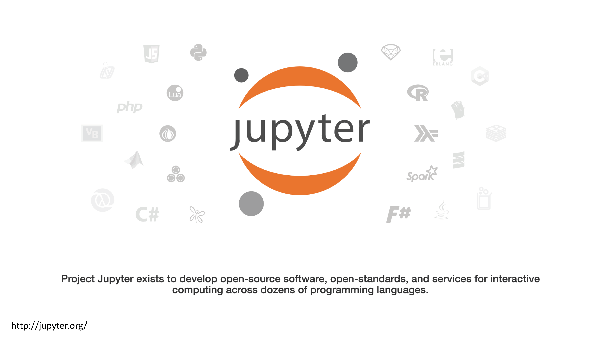
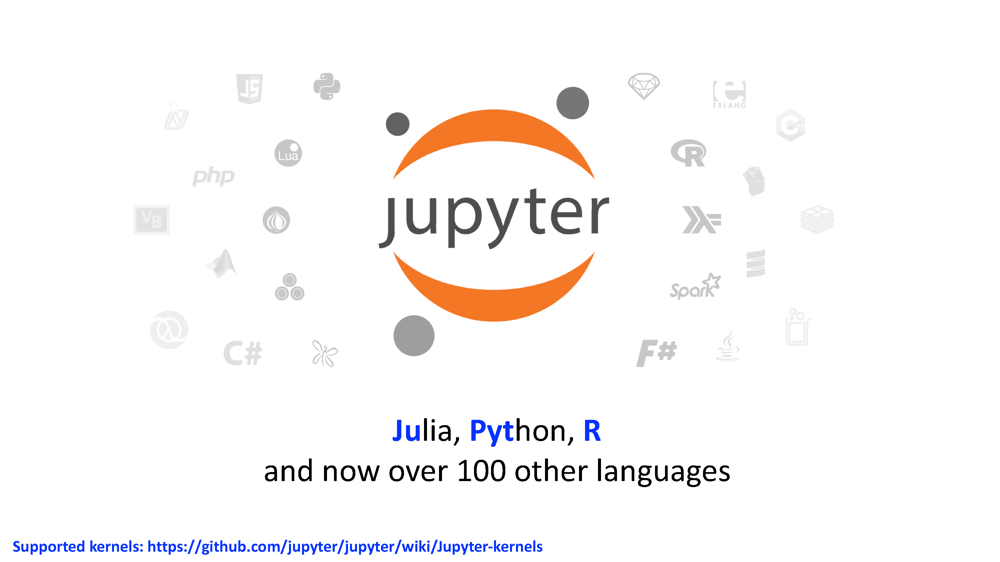
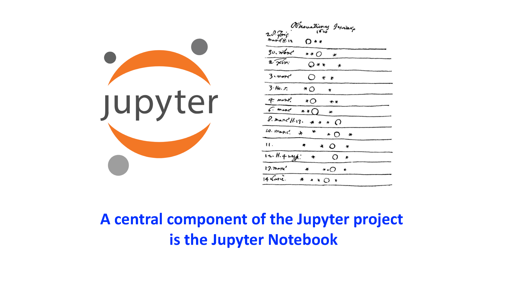

Week 1: Jupyter and Python
Contents
Table of Contents
This class will be recorded.
Week 1: Jupyter and Python¶
Acknowledgement¶
The material for this notebook has been partially borrowed from Geoff Boeing’s Module 3 notebook for his “Data, Evidence, and Communication for the Public Good” course taught at USC and from Geo-Python, an online course taught by the Department of Geosciences and Geography at the University of Helsinki.
What is Jupyter? Where is it?¶
Welcome to Jupyter Notebooks. Class lectures, code instructions, and student interactions will all be handled through this Jupyter Notebook interface.


Jupyter Notebooks
originally iPython Notebooks
web-based interface that is “human” friendly for programming
“literate programming” pioneered by Stanford computer scientist Donald Knuth
a series of interactive “cells” that contain executable code
Using Jupyter Notebooks¶
There are two ways to use Jupyter Notebooks for this class.
Recommended: IDRE’s Jupyter Hub: The first and recommended option is to use the class Jupyter Hub server that is hosted by IDRE. You will need to use your UCLA multi-factor authentication to login.
Advanced Users: The second option is to install Jupyter yourself on your local machines. I recommend you use Anaconda. This has many pitfalls, in that each machine is configured differently, and may have difficulties mirroring the needed environments to run applications smoothly and in sync with the class. However, this may be recommended for more advanced users, and those who are comfortable working with the command prompt, setting up conda environments, and installing and updating necessary python libraries. Note that if you choose to run your own local jupyter environment for this course, support will be limited!
Python¶
What is Python? How does it work?¶
it is a “high level” language, meaning that it abstracts underlying computer technical details
it is multi-purpose
it is the most popular coding language in the world
it has a standard library, and numerous third party libraries
here are some of the third party libraries that urban data scientists work with:
Hello world¶
Have you always wanted to type “hello world” to begin a new coding adventure? This is your opportunity to do so. In the cell bellow, simply type those words and hit shift + enter
print('hello digital humanists!')
hello digital humanists!
Welcome to your first python function, print(). You are passing an argument to the print command that Python interprets and decides what to do with. Get used to this syntax: “Lights, camera, action!”, “Command, brackets, arguments!”
Comments¶
You can ask any rational coder, and they will all agree that good code is determined by how well documented it is. Documentation is often judged by how much an author uses comments within the code.
# this is a comment. the python interpreter ignores it.
# comments are just notes for humans to read to help understand the code
# best practice: add a comment for every couple lines of code to explain what's going on and why
# you'd be amazed at how quickly you forget your code's logic (at least i always do)
Math¶
Out of the box, Python knows math too.
The list of basic arithmetic operations that can be done by default in Python is in the table below.
Operation |
Symbol |
Example syntax |
Returned value |
|---|---|---|---|
Addition |
|
|
|
Subtraction |
|
|
|
Multiplication |
|
|
|
Division |
|
|
|
Exponentiation |
|
|
|
# add two integers
1+1000
1001
# divide two integers to get a floating number
11/3
3.6666666666666665
# multiply two integers
2 * 3
6
Modules¶
For anything more advanced, we need to load a module. For math operations, this module is called math and it can be loaded by typing import math. Try that below.
import math
Once a module is loaded, the notebook inherits all the functions that come with it. In other words, your project has become that much more capable, expanded with cabilities based on the inherited module.
math.sin(3)
0.1411200080598672
math.sqrt(4)
2.0
Let’s summarize what we’ve just seen with modules:
A module is a group of code items such as functions that are related to one another. Individual modules are often in a group referred to as a library.
Modules can be loaded using
import. Functions that are part of the modulemodulenamecan then be used by typingmodulename.functionname(). For example,sin()is a function that is part of themathmodule, and used by typingmath.sin()with some number between the parentheses.Within a given Jupyter Notebook the variables you define earlier in the notebook will be available for use in the cells that follow as long as you have already executed the cells.
Modules may also contain constants such as
math.pi. Type this in the cell below to see the value of the contantmath.pi.
math.pi
3.141592653589793
Variables¶
Variables can be used to store values calculated in expressions and used for other calculations. Assigning value to variables is straightforward. To assign a value, you simply type variable_name = value, where variable_name is the name of the variable you wish to define.
# variables, such as x here, contain values and their values can vary
x = 5
# what is the value of x?
x
5
# you can perform operations on variables, just like you can on two numbers
x + 3
8
# what is the value of x now?
x
5
# to update the value of a variable, you need to do an assignment again
x = x + 3
# and now what is the value of x?
x
8
# create a new variable y from an operation on x
x = 5
y = x * 2
y
10
# outputting values only displays the last thing output
# this is different from printing! it is kinda confusing!
x
y
10
# use print to write some value(s) to the "console"
print(x)
print(y)
5
10
# you can comma-separate values to print multiple values to the console on one line
# note that this syntax automatically adds a space between variables
print(x,y)
5 10
# you can also print the result of an expression
print(x * y)
50
# can you print and concatenate a number and a string?
print('x is ' + x)
---------------------------------------------------------------------------
TypeError Traceback (most recent call last)
Input In [21], in <cell line: 2>()
1 # can you print and concatenate a number and a string?
----> 2 print('x is ' + x)
TypeError: can only concatenate str (not "int") to str
# the python print command can only concatenate values of the same type
# so you need to convert numeric values to strings
print('x is: ' + str(x))
x is: 5
# alternatively, you can use a comma!
# confusing, but do you see the difference?
print('x is:', x)
x is: 5
Now it’s your turn. In a single line, create a new variable z and set it equal to x divided the sum of x plus y. Then, print the result of what z is.
z = x/(x+y)
print(z)
0.3333333333333333
DIY: Converting celcius to Fahrenheit¶
In the cell below, define a variable called temp_celsius, assign it a value of 30.0, and then print that variable value using the print() function. Note that you need to do this on two separate lines.
temp_celsius = 30.0
print(temp_celsius)
30.0
As we did above, you can combine text and even use some math when printing out variable values. The idea is similar to the examples of adding 2+2 or calculating the square root of four from the previous section.
In the cell below, print out the value of temp_celsius in degrees Fahrenheit by multiplying temp_celsius by 9/5 and adding 32. This should be done within the print() function to produce output that reads Temperature in Fahrenheit: ??.
print('Temperature in Fahrenheit:',temp_celsius *(9/5) +32)
Temperature in Fahrenheit: 86.0
Updating variables¶
Values stored in variables can also be updated. Let’s redefine the value of temp_celsius to be equal to 15.0 and print its value in the cells below. You can also say that you have overridden the previous value with a new one.
temp_celsius = 15.0
print('temperature in Celsius is now:', temp_celsius)
temperature in Celsius is now: 15.0
Warning
If you try to run some code that accesses a variable that has not yet been defined you will get a NameError message. Try printing out the value of the variable tempFahrenheit using the print() function in the cell below.
print('Temperature in Celsius:', 5/9 * (tempFahrenheit - 32))
---------------------------------------------------------------------------
NameError Traceback (most recent call last)
Input In [29], in <cell line: 1>()
----> 1 print('Temperature in Celsius:', 5/9 * (tempFahrenheit - 32))
NameError: name 'tempFahrenheit' is not defined
Note
One of the interesting things here is that if we define the undefined variable in a cell lower down in the notebook and execute that cell, we can return to the earlier cell and the code should now work. That was a bit of a complicated sentence, so let’s test this all out. First, let’s define a variable called tempFahrenheit in the cell below and assign it to be equal to 9/5 * temp_celsius + 32, the conversion factor from temperatures in Celsius to Fahrenheit. Then, return to the cell above this text and run that cell again. See how the error message has gone away? tempFahrenheit has now been defined and thus the cell above no longer generates a NameError when the code is executed.
Also, the number beside the cell, for example In [2], tells you the order in which the Python cells have been executed. This way you can see a history of the order in which you have run the cells.
tempFahrenheit = 9/5 * temp_celsius + 32
Just to check their current values, print out the values of temp_celsius and tempFahrenheit in the cell below.
Getting help¶
# ask ipython for it by using '?'
len?
# click on a function or variable and press shift+tab
print()
temp_celsius
tempFahrenheit
59.0
# use tab-completion to fill in the rest of statements, functions, methods
tempFahrenheit
59.0
# tab-completion also works with variables you have created (ie, a variable in memory)
number_of_students = 45
number_of_students
45
# what about errors? you can't divide by zero...
12/0
---------------------------------------------------------------------------
ZeroDivisionError Traceback (most recent call last)
Input In [36], in <cell line: 2>()
1 # what about errors? you can't divide by zero...
----> 2 12/0
ZeroDivisionError: division by zero
How do you read that “traceback” message?
For syntax errors or how to do something, Google it! (This is literally 90% of my job…)
Also, StackOverflow is a particularly good site for code snippets and troubleshooting: https://stackoverflow.com/
Data types¶
There are 4 basic data types in Python as shown in the table below.
Data type name |
Data type |
Example |
|---|---|---|
|
Whole integer values |
|
|
Decimal values |
|
|
Character strings |
|
|
True/false values |
|
The data type can be found using the type() function.
# integers are whole numbers
type(125)
# every variable has a data type, and they can be of any type
x = 125
type(x)
# float is a floating point (aka decimal) number
some_rate = 4.3
type(some_rate)
# strings are "strings" of characters
s = 'abc'
type(s)
# a list is a collection of elements denoted by square brackets
# it knows it's a list because of those brackets
my_list = [1, 2, 3, 4]
my_list
type(my_list)
# a dictionary is a collection of key:value pairs, denoted by curly braces
person = {'first_name':'Yoh', 'last_name':'Kawano','hobby':'soccer'}
person
type(person)
# a dictionary can also be written like this for clarity, and for cases where there are many key:value pairs
person = {
'first_name':'Yoh',
'last_name':'Kawano',
'hobbies':'soccer'
}
# now you try
# create a new dict variable containing the individual components of your home address
Strings¶
# some of the operators we saw earlier work on strings
city = 'Los Angeles'
sep = ', '
state = 'CA'
zip_code = '90095'
# you can "concatenate" strings with the + operator
location = city + sep + state + ' ' + zip_code
print(location)
Here is a scenario that you will encounter frequently when working with census data FIPS codes. As some of you may know, the FIPS code for the state of California is 06. The county FIPS code for Los Angeles is 037. Both happen to have “leading zeros.”
Try to assign a new variable state_county_FIPS to equal 06037 below. What happens?
# error
state_county_FIPS = 06037
How do you fix this problem?
Assign the variable as a string, by adding single quotes around its value.
# the FIPS code 06037 isn't actually a number, it's a string of numeric characters
# important to remember! FIPS codes aren't numeric, they are strings!
state_county_FIPS = '06037'
# multiplying a string just duplicates it
state_county_FIPS * 3
# you can get the nth element from an iterable object (like a string) with [n] indexing notation
# remember, in Python the index starts with zero not one
print(location)
location[0]
print(location[0])
print(location[1])
print(location[2])
# how many characters are in this string? use len function
len(location)
# get a substring from some position up to but not including a second position
location[4:7]
# get the first n characters from the string
location[:5]
# get the characters from the string after the nth position
location[5:]
# get the final n characters from the string
location[-5:]
# you can replace characters in a string with the replace() method
location.replace('e', 'E')
# now it's your turn
# create a new string from the 0th, 4th, and 6th characters in location
Converting between types¶
zip_code
# you can convert between data types
type(zip_code)
# convert the zip code string to an integer (notice what happens to the single quotes)
zip_code = int(zip_code)
zip_code
type(zip_code)
# the math works better now
zip_code * 2
# the int function won't convert a string that looks like a floating point number
rent_str = '2500.00'
rent_int = int(rent_str)
# but you can daisy-chain functions together to convert the string to a float then to an int
# the inner function executes then passes its value to the outer function
rent_int = int(float(rent_str))
rent_int
# you cannot concatenate a string and a number
city = 'Los Angeles '
zip_code = 90089
city + zip_code
# so convert the number first, then concatenate
city + str(zip_code)
# now it's your turn
# extract the zip code characters from the end of the "location" variable and convert to integer
Lists¶
# this is a list
my_list = [2, 4, 6, 8]
# how many elements are in this list?
len(my_list)
# get the zero-th element in a list
my_list[0]
# you can update elements in a list because it is mutable
my_list[2] = 100
my_list
# add a new element with the append() method
# lists can hold elements of varying data types
my_list.append('hello')
my_list
Converting list elements¶
# objective: how do we convert a list of integer values into a list of equivalent string values?
# in other words, how do we convert each element in a list to a different data type?
# first, let's make a list containing the first 5 even numbers
int_list = [2, 4, 6, 8, 10]
# how many elements are in our list?
# what is the value of the element in the zero-th position of the list?
# what is the data type of this element in the zero-th position?
# let's convert that element from an int to a string using the str() function
str(int_list[0])
# let's check the data type that results from that str() function operating on our list element
type(str(int_list[0]))
# now we'll create a new list to contain the string versions of our integers
str_list = []
# now let's convert the element in the zero-th position of our int_list to a string
# and append it to the new str_list that will contain string values
# remember, the way to add a new element to a list is list.append()
# we are simply appending the result of the string conversion
str_list.append(str(int_list[0]))
# our str_list should have one element - the value at the zero-th position of int_list, converted to a string
str_list
# looks like that worked, so let's convert and append the rest of the values
# we know our int_list contains 5 elements from when we ran len() on it earlier
# we've already done position 0, now let's do positions 1 - 4
str_list.append(str(int_list[1]))
str_list.append(str(int_list[2]))
str_list.append(str(int_list[3]))
str_list.append(str(int_list[4]))
# let's see our list of strings
str_list
# and for comparison, here's our original list of integers
int_list
# what we have seen is a manual way of doing this int -> string conversion
# the whole benefit of coding is that we automate this sort of manual work
# over the next couple of weeks we'll learn more advanced and efficient techniques like this:
new_list = []
for value in int_list:
new_list.append(str(value))
new_list
# now you try
# write a code snippet to multiply all the items in int_list by 3, then sum the result
# note that there are elements to this problem that you may have to google yourself
# now you try
# calculate the mean value of int_list
# hint: there is no function for mean()... try to do this "manually"